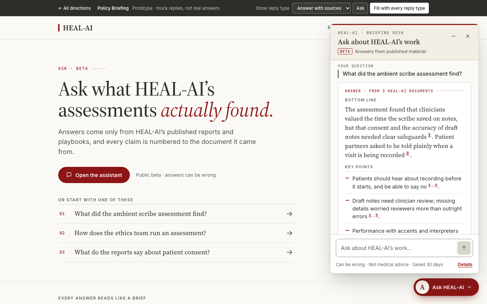

01
Policy Briefing
Each answer reads like a one-page memo from a think tank. A short "Bottom line", then "Key points", then numbered notes like footnotes.
Inspired by
- Anthropic: lots of white space, serif headlines, quiet controls.
- Stanford HAI Policy: the summary comes first, the points come after.
- Our World in Data: numbered notes that say where each source goes.
Good
- Calm and serious. Feels like Stanford.
- Closest to the current site, so the easiest change.
Watch out
- The least "new" of the four.
- Its footnote numbers are the smallest tap targets of the four.